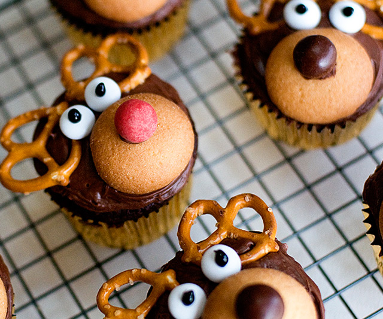

Reindeer cupcakes

These reindeer cupcakes are very cute and perfect as a treat for christmas. They have a lot of different ingredients and they are harder to make but they taste delicious.
Ingredients
chocolate cake:
- 1 box devil's food cake mix
- 3 eggs
- 1/2 C. oil
- 2 tsp. vanilla extract
- 1 C. milk or buttermilk
- 1/2 C. sour cream
Chocolate frosting:
- 1 C. butter
- 1/3 C. unsweetened cocoa powder
- 2-3 C. powdered sugar
- 2 Tbsp. milk
reindeer face:
- Pretzles
- Nilla Wafers
- Brown M&M's
- White Mint M&M's
Instructions
- Preheat oven to 350 degrees and line pans with cupcake liners.
- Sift cake mix into a small bowl and set aside.
- In a large bowl, combine eggs, oil, vanilla extract, milk and sour cream until smooth.
- Stir in cake mix.
- Fill cupcake liners 3/4 full and bake for 16-20 minutes or until an inserted knife comes out clean.
- Let cool.
- Chocolate frosting: Beat butter. Add cocoa powder, 2 C. powdered sugar and milk. Slowly add more powdered sugar until you reach your desired consistency.
- Prep reindeer "faces" by using frosting to stick brown M&M's on Nilla Wafers (some red for Rudolphs if you want). Melt down a few chocolate chips, put in a small plastic bag, snip off the tip to make a mini piping bag and "dot" little eyeballs on the white M&M's to make eyes.
- Frost cupcakes.
- (See photos above) Place Nilla wafers with M&M's on cupcakes, then place pretzels above. Use a little frosting to stick on 2 eyes and there you go!
Tip: You can use red M&M's to make make the red nose of Rudolf!
And that's all you need to make you're own reindeer cupcakes. Hopefully they turned out good!